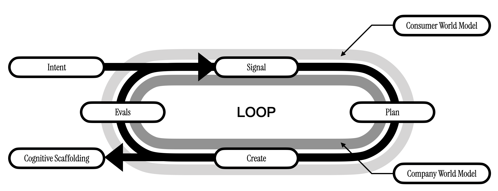
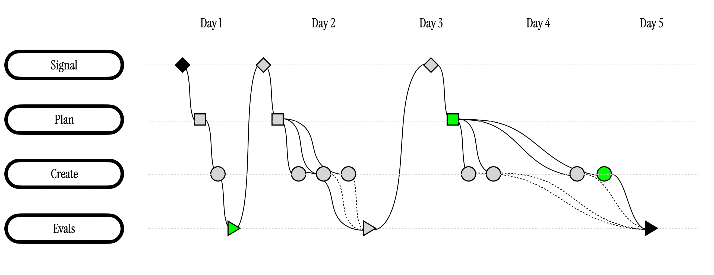

Work 03 · A long-horizon creative agent
Agentic Creativity
Can an agent take part in the whole arc of creative work, and extend what a team can imagine rather than automate it?
Most AI tools answer one prompt at a time. Product innovation is a long process: sensing what people want, framing an opportunity, generating and testing concepts, and carrying the result to market. Agentic creativity asks how autonomous agents can participate in, and extend, that creative act rather than merely automate parts of it.
The product-innovation agent, which runs inside atypica.AI, is designed for the whole horizon. Given a brief such as a new spring gift box, it asks the questions that set the bounds, studies what the company already learned and what people are saying, diverges with the Creative Reasoning Model, and tests each direction in parallel with Subjective World Model personas and interviews. It returns a recommendation in which every claim traces back to its evidence.
People stay in the loop: they set the bounds, approve the plan before costly work starts and make the final call. Every decision, including what was rejected and why, is written back to a graph of the organization's decisions, so the next project starts from it.
The design builds on the Lab's research on human-centered creativity with vision–language models and on multi-agent collaboration in design workflows, and it runs on Tezign's infrastructure of post-trained models, context systems and agent harnesses.
Structure
- Used for
- consumer insight, product innovation and marketing growth at Tezign
- Runs in
- atypica.AI, on Tezign's agent platform
- Research
- Aug-Creativity (HCII 2025); multi-agent collaborative design (HCII 2024)
- Research line
- Agentic Creativity, Design AI Lab
In use

